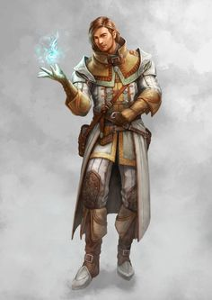

Our Heroes:
- Hector the Well Endowed

- Thalemas the Forgotten

- Tiny Nuggins

- Nightman 
- Billy Stubhorn

Campaign 4: "Salvage Operation"

Our Heroes:
Episode 8
At the council Anders promises 28,000 gold (a fee that is higher due to Tiny’s successful negotiation) for a successful mission of recovering his chest of bills of sale intended for a failed business deal that fell through 3 years ago. To prepare, our heroes head to Xandros to buy a health potion and a Weapon of Warning. Afterwards they head to the Temple of Procan (sorry Nightman, forgot about this one). At the Temple of Procan, Wellgar Brinehanded (CG male human priest), tells the gang that the ship they are looking for, the Emperor of the Waves, has been sighted not far off the coast of Saltmarsh. If they set sail soon, they can catch it before it drifts off.
Thus, our heroes set out immediately. On the ride out Tiny and Hector begin to fight, yet again, over Hector’s lack of respect. Tiny, initially chastises Hector for his lack of respect at the council claiming it embarrassed the party, to which Hector questions Tiny’s dedication to the party. Little is heard after this, but all see the fight ensue. Nightman, Thalemas, and Billy all jump in to break up the fight, but find themselves brawling amongst each other as blows are thrown. Finally, Tiny breaks away and commands his crew to stand at attention, ending the fight. At that point Oceanus informs the gang that there is a Brigantine, flying the flags of the Sea Princes, headed towards them. While Tiny commands Nightman to prepare the sails, Billy uses Gust of Wind to conjure up a might blow to fill the sails, helping our heroes escape from a likely demise.
After escaping, our heroes notice another ship, this time, flying flags of Keoland. They decide to approach and come upon the Soul of Winter commanded by Wolgar Windrune (LN male dwarf veteran). Wolgar invites them upon his ship and learns that both parties are interested in the same mission. Wolgar and Tiny agree to split the profits 50/50 between their ships. Wolgar offers supplies and is happy to accept the help of our powerful heroes (compared to his larger force of 30 weaker Dwarves).
After reaching their agreement, our heroes sail alongside the Soul of Winter for a few hours before they come into sight of The Emperor of the Waves. As they approach, Thalemas notices the ship has had its deck cleared by a tidal wave or hurricane. The gang sends Oceanus below to assess further damage. Oceanus reports damage from a sea creature. After reporting this, Oceanus informs the party that he will head back to Saltmarsh to request reinforcements, albeit this may take some time. The party agrees to continue the mission and not wait. With this information, Wolgar, fearful of losing any men, refuses to send his men. He says “As Dwarves, we are very loyal, but I cannot send my men to their death. They are not as skilled as you. However, For 1000 gold, as opposed to our original request of 14,000 gold, we will watch your ship, give you those supplies, and help you outside the ship.”
The party agrees and moves upon the ship in a row boat manned by 2 Dwarves from Wolgar’s crew. Once they reach the ship they use the hooks and ropes provided by Wolgar to climb up the ship. Billy, Nightman, and Tiny make it up fine, but Thalemas and Hector both fall. Hector falls and dislocates his shoulder. He is hoisted into the rowboat, shoulder reset, and successfully climbs aboard with a serious pain in his shoulder. Thelemas falls, hits his head on the ship on the way down, and is rescued by the Dwarves. After he comes to he climbs up, but with a bit of a concussion. Once aboard, Billy notices the wheel is not connected to the rudder and there is blood, 3 days old, on the planks.
The party then decides to enter the navigator’s room. They must hack down the door to get in. Once in they notice sheets of webbing. As they move carefully through the room they are surprise attacked by a spider, though it misses its biting of Hector. In response, Hector hits the spider with an arrow. Immediately after, Nightman conjures a successful Eldritch Blast. During the commotion, an Ettercap emerges. At the same time the Giant Spider casts a web upon Hector, immobilizing him. Tiny slashes the arm of the Ettercap while Billy crushes the juicy head of the Giant Spider with his banjo. As Hector breaks free of his sticky tomb, the Ettercap bites Nightman right before Thalemas is able to slash it in the chest. Enraged, the Ettercap bites Thalemas and wraps him in a web. Suddenly, Billy constructs a fire while Hector hits the Ettercap with an arrow. As Billy’s fire burns the Ettercap, Nightman eradicates it with Eldritch Blast. Right as the party begins to calm down they are engaged with a swarm of spiders. Billy fuels his fire and kills 2/3s of the swarm. While Hector slashes at the little bastards, Billy drags his Thorn Whip and turns their bodies into carcasses.
After leaving the navigator’s room our heroes head to the Altar of Lolth. Immediately upon entering another Giant Spider, 4 swarms of spiders, and an Ettercap attack the group. Hector perceives them and hits the Giant Spider in the eye with an arrow. Nightman uses Burning Hands to eradicate the swarm. Billy follows suit and melts away another swarm of spiders with his fire abilities. Hector is able to nock another arrow and pierces the head of the Giant Spider. Meanwhile, Tiny was successful smashing a swarm of spiders with the blunt ends of his sword through either sheer determination or some act of his god (God). Hector lands another successful arrow, this time through the brain of the Ettercap. During the chaos, Thalemas takes after Tiny and is able to slash through the last swarm of spiders.
Tired and wounded from climbing and battling onto and upon the ship, the party tries to rest. Their efforts are thwarted by a swarm of spiders, patrolling the ship. The spiders are easy dispatched, but our heroes are rudely informed that rest is not an option on this mission.
Our heroes descend, using the stairs to the galley. They notice a trapdoor but leave it alone. Instead they head through the door into the area of the Unholy Shrine. Upon opening the door they are attacked by Krell Grohlg (NE male half-orc Druid) and his Phase Spider who bites and poisons Thalemas, putting him at near death. Krell tries to negotiation with the party to be let go, to which they decline. It is at this moment that Krell informs the near dead Thalemas that he was happy to have helped kill Thalemas’ family. Krell claims that he was raised by Thalemas’ group of Druids (those trying to rid the Dredwood of evil), but betrayed them for greater power from the Master of the Dreadwood, resulting in the death of everyone Thalemas ever loved when he was a child. Before Thalemas could whimper “why” Nightman reduced Krell to a pile of miserable ash with Eldritch Blast. At that same time the Phase Spider reemerged from the Ethereal Plane. Taking the opportunity, Billy shapeshifts into an Ape, smashes the body of the Phase Spider, giving Hector the opportunity to finish it with an arrow. While they kill the Phase Spider, our heroes neglect near death Thalemas, who is bit and poisoned by a Giant Spider. In a rage, Billy, as an ape, smashes the Giant Spider and then rips the second Giant Spider like a banana (although he doesn’t eat it). While the Ape Billy is neutralizing the threats, Tiny uses Lay on Hands to restore Thalemas to near life. With very little in him, except rage from learning of his parents betrayal, Thalemas uses Scorching Ray to melt the last Giant Spider to a gooey pulp.
After Thalemas’ near death, the group heals up with health potions and spells and moves into the Spider’s Nest, unknowing to them. 2 Giant Spiders and 1 Ettercap bite and almost kill a freshly healed Thalemas. Hector drills the Ettercap with an arrow, killing it. Nightman uses Eldritch Blast followed by another of Hector’s arrows to kill one Giant Spider. The last Giant Spider loses its head to Tiny’s large sword.